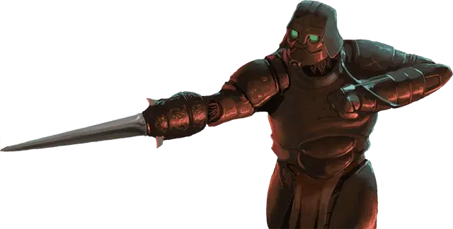

Разведчик клинков
Blade Scout
Средний Конструкт (Кованый), обычно законно-злой

Класс Доспеха 18 (природный доспех)
Хиты 105 (14к8 + 42)
Скорость 30 футов
| мод | спас | ||
|---|---|---|---|
| СИЛ | 14 | +2 | +2 |
| ЛОВ | 20 | +5 | +8 |
| ТЕЛ | 16 | +3 | +3 |
| мод | спас | ||
|---|---|---|---|
| ИНТ | 10 | +0 | +0 |
| МДР | 19 | +4 | +7 |
| ХАР | 10 | +0 | +0 |
Навыки Акробатика +8, Восприятие +7, Скрытность +8
Сопротивление урону яд
Иммунитет к состояниям истощение, отравление
Чувства пассивное Восприятие 16
Языки Общий
Опасность 7 (2900 опыта)
Бонус мастерства +3
Особенности
Тактика стаи. Разведчик совершает с преимуществом броски атаки по существу, если в пределах 5 футов от этого существа находится как минимум один дееспособный союзник лейтенанта.
Действия
Мультиатака. Разведчик совершает три атаки Наручным клинком или две атаки Метателем болтов. Он может заменить одну из атак использованием Силка.
Наручный клинок. Рукопашная атака оружием: +8 к попаданию, досягаемость 5 футов., одна цель. Попадание: 12 (2к6 + 3) рубящего урона.
Метатель болтов. Дальнобойная атака оружием: +8 к попаданию, дистанция 80/320 футов, одна цель. Попадание: 9 (1к8 + 5) колющего урона.
Силок (1/День). Разведчик создает Крошечную механическую ловушку на твердой поверхности в пределах 5 футов от себя. Ловушка скрыта и требует успешной проверки Интеллекта (Расследование) Сл 17 для обнаружения. Ловушка существует в течение 1 минуты. Каждый раз, когда существо перемещается в область в пределах 10 футов от ловушки или начинает там свой ход, оно должно преуспеть в спасброске Ловкости Сл 16, иначе получит 21 (6к6) рубящего урона и упадет ничком. Существо совершает этот спасбросок только раз за ход.
Бонусные действия
Рывок. Разведчик перемещается на расстояние, не превышающее его скорость, не провоцируя атаки.
Описание
Клинки Эберрона
Посреди разрухи Последней войны Эберрона, кованный по имени Лорд Лезвий стал тем, кто заполнил вакуум власти, оставшийся в опустошенных Землях Скорби. Последователи Лорда Лезвий, известные как клинки, сформировали культ личности, который обожествляет его и проповедует кровавую, шовинистическую доктрину превосходства кованых. Основной принцип клинков заключается в том, что все не-кованые континента Кхорвайр должны быть уничтожены.
Разведчик клинков
Разведчики клинков ответственны за исследование и составление карт регионов Земель Скорби, еще не захваченных легионами Лорда Лезвий.